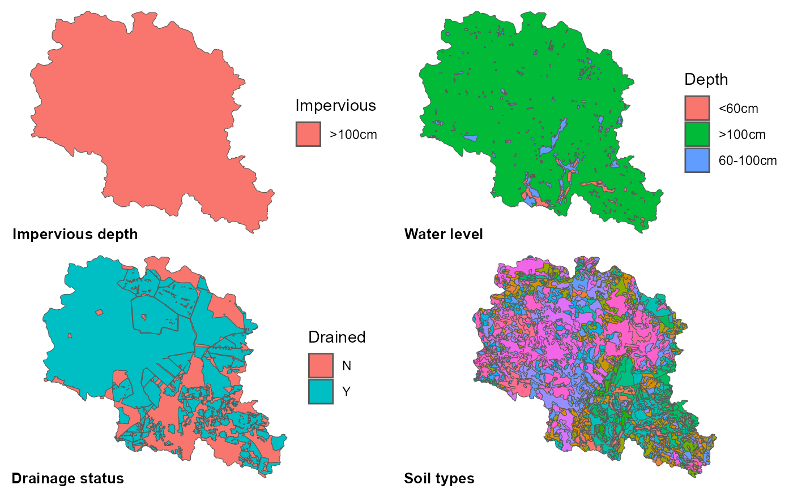
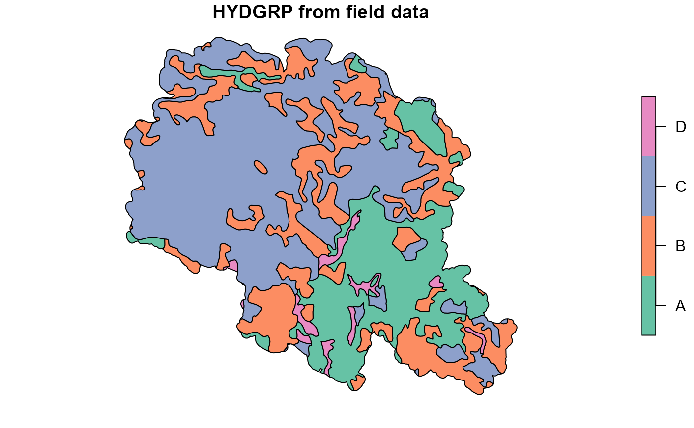
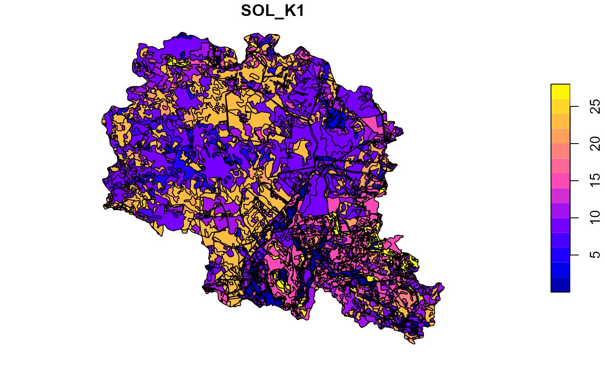
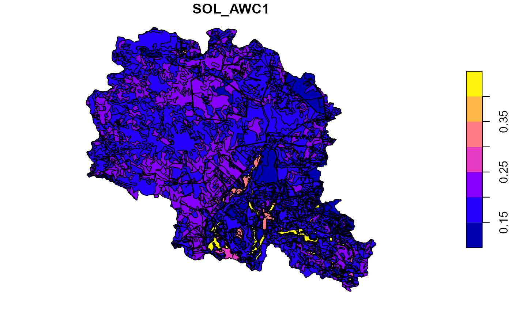
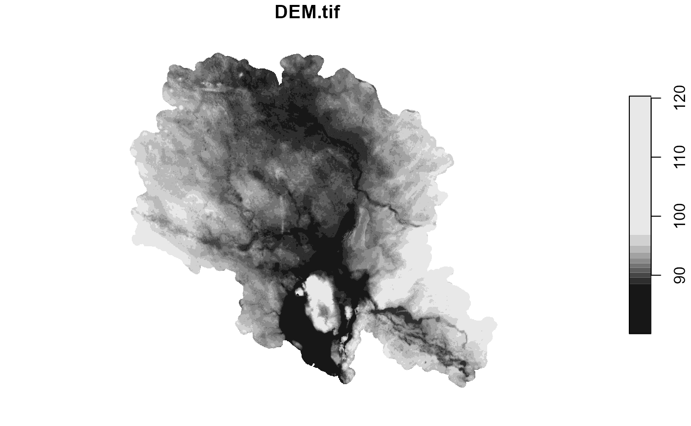

Introduction
Obtaining soil parameters for SWAT+ model can be difficult. Therefore package has functions with allows automatic preparation of soil parameters. Important theoretical documentation for the equations is presented in the section 3.4 of SWAT+ modelling protocol.
For populating SWAT+ usersoil parameter table SOL_Z (depth of layer), CLAY (percentage of clay defined as particles <2 \(\mu m\)), SAND (percentage of sand - 50–2000 \(\mu m\)), SILT (percentage of silt - 2–50 \(\mu m\)) and OC (same as SOL_CBN, soil organic carbon content in %) parameters should be collected per each separate soil type profile’s layer. Other parameters will be filled by get_soil_parameters and get_hsg functions. For assigning Hydrologic Soil Groups tile drainage, water level and impervious layer depth data are needed.
The preparation of soil data and parameters could be done using following workflow. However, depending on available types of data, different steps might needed. This is an example of Polish case study of Upper Zglowiaczka in OPTAIN project.
Loading libraries and paths to data
Workflow presented here needs 6 R packages. However, only
svatools and euptf2 libraries are required for
the population of soil parameter’s table with get_soil_parameters and
get_hsg functions presented in
Adding soil parameters to user table step. Input
for this step could be prepared in various ways. Here is presented just
one of the way to understand better all work process to develop soil
parameters table.
##Required
library(svatools)
library(euptf2)
##Optional
library(sf)
library(readxl)
library(tidyverse)
library(stars)
##Required
##Path to soil distribution shape file
soil_path <- system.file("extdata", "GIS/soils.shp", package = "svatools")
##Path to soil lookup initial parameters with SOL_Z, CLAY, SILT, OC parameters filled.
lookup_path <- system.file("extdata", "soil_lookup.xlsx", package = "svatools")
##Path to tile drainage shape file
drainage_path <- system.file("extdata", "GIS/drained.shp", package = "svatools")
##Optional
##Path to water level depth shape file
water_l_path <- system.file("extdata", "GIS/water_level.shp", package = "svatools")
##Path to DEM raster file
DEM_path <- system.file("extdata", "GIS/DEM.tif", package = "svatools")
##Path to catchment boundary shape file (which in this case used as impervious layer data)
basin_path <- system.file("extdata", "GIS/basin.shp", package = "svatools")
##Path to soil hydro groups
hsg_path <- system.file("extdata", "GIS/hydgrp.shp", package = "svatools")Preparing input data
Lookup table contains two sheets. One about granulometry (SAND, SILT, CLAY content) of each soil texture class. Second about humus content in different humus class soils (distributed through layers), which could be easily recalculated to organic carbon content (with division by 1.72 coefficient).
##Reading granulometry lookup information for soil types into dataframe
gran <- read_excel(lookup_path, sheet = "SandSiltClay")
##Print example of gran table
print(head(gran, 3))## # A tibble: 3 × 4
## `Texture EN` SAND SILT CLAY
## <chr> <dbl> <dbl> <dbl>
## 1 CL 32.0 42.9 25.1
## 2 L 52.3 29.4 18.2
## 3 LS1 87.2 10.3 2.46
##Reading humus lookup information in to dataframe and converting it into organic carbon %.
humus <- read_excel(lookup_path, sheet = "Humus") %>%
mutate(OC1 = `Humus 1st layer [%]`/1.72,
OC2 = `Humus 2nd layer [%]`/1.72,
OC3 = `Humus 3rd layer [%]`/1.72) %>%
select(Humus, starts_with("OC"))
##Print example of humus table
print(head(humus, 3))## # A tibble: 3 × 4
## Humus OC1 OC2 OC3
## <dbl> <dbl> <dbl> <dbl>
## 1 1 1.88 0.942 0.174
## 2 2 1.63 0.814 0.151
## 3 3 1.26 0.628 0.116
##Reading GIS layers for basin boundary, water level, drainage status, soils (with "Code" column here representing soil types) and soil hydrological groups.
##All data should be in one coordinate system.
##Impervious layer is prepared from basin layer as it is below 1 m whole catchment falls into one category.
impervious<- st_read(basin_path, quiet = TRUE) %>%
mutate(Impervious = ">100cm") %>%
st_transform(3035)
water_level <- st_read(water_l_path, quiet = TRUE) %>%
st_transform(3035)
drainage <- st_read(drainage_path, quiet = TRUE) %>%
st_transform(3035)
soils <- st_read(soil_path, quiet = TRUE) %>%
st_transform(3035)
hsg <- st_read(hsg_path, quiet = TRUE) %>%
st_transform(3035)All required GIS input data are presented in the maps below. Polygons in the impervious layer should have one of three possible categories: “<50cm”, “50-100cm” and “>100cm”. If no information is available impervious layer depth could be assumed to be the depth of last soil layer and then reclassified into one of the three categories. Water level depth also should have only three categories: “<60cm”, “60-100cm” and “>100cm”. If information is not available soil types and land use could serve as a good proxy for this information. For instance wet areas as wetlands could probably be assigned with “<60cm” class, areas with dominant organic soils with “60-100cm”, etc. Drainage status should be divided into two: “Y” for drained areas, “N” for areas without working tile drains. If no database available, information about existence of drains might be available in drainage installation plans.
##Preparing maps for each GIS data
p1 <- ggplot(impervious) +
geom_sf(mapping = aes(fill = Impervious)) +
theme_void()
p2 <- ggplot(water_level) +
geom_sf(mapping = aes(fill = Depth)) +
theme_void()
p3 <- ggplot(drainage) +
geom_sf(mapping = aes(fill = Drained)) +
theme_void()
p4 <- ggplot(soils) +
geom_sf(mapping = aes(fill = Code), show.legend = F) +
theme_void()
##Combining into one
cowplot::plot_grid(p1, p2, p3, p4, ncol = 2,
labels = c('Impervious depth', 'Water level', 'Drainage status', 'Soil types'),
label_x = 0, label_y = 0, hjust = -0.1, vjust = -0.5, label_size = 10)
Preparing final soil layer
The final soil layer should have information added from GIS layers to soil types. For instance in our example initial soil type code has 4 elements separated by “_“. So it looks as S3_S3_SL3_3. First three shows texture class of soil granulometry three layers and the last number humus class.
##Printing example of soil codes before intersection
print(head(soils %>% st_drop_geometry(), 3))## Code
## 1 S3_S3_SL3_3
## 2 SL2_S3_SL3_3
## 3 SL3_SL3_SL3_1
##Counting number of unique soil types in input soil data
soils_n1 <- dim(soils %>% st_drop_geometry() %>% select(Code) %>% unique)[1]
soils <- soils %>%
st_intersection(impervious) %>%
st_intersection(water_level) %>%
st_intersection(drainage) %>%
mutate(SNAM = paste0(Code, "_", Impervious, "_", Depth, "_", Drained)) %>%
select(SNAM)
##Counting number of unique soil types in generated soil data
soils_n2 <- dim(soils %>% st_drop_geometry() %>% select(SNAM) %>% unique)[1]After intersection with other GIS layers information for them is added to the soil code. Thus generating new soil type, which have information about water, impervious layer depth, drainage status as well. For instance a new code is S3_S3_SL3_3_>100cm_60-100cm_Y. So the first four elements stay the same and the last three added should be depth to impervious layers, depth to water level and drainage status classes. It is important to point out that intersection with GIS layers in this example increased number of unique soil types from 171 to 542 and a new soil type distribution GIS data have been created.
##Example of new soil codes
print(head(soils %>% st_drop_geometry(), 3))## SNAM
## 3 SL3_SL3_SL3_1_>100cm_>100cm_N
## 5 SL4_SL4_SL4_3_>100cm_>100cm_N
## 6 SL3_SL3_SL3_2_>100cm_>100cm_NPreparing initial user soil table
This part prepares input for the following parameter generation part, which actually uses
svatools package functions to populate usersoil table.
Workflow provided up to here was done to form input to
usertable, which could be used with get_soil_parameters and
get_hsg functions. However, such
this information could be prepared with other means than R, which might
be more convenient to user and then loaded into R environment. The only
requirements for table to have these parameters filled:
- SNAM soil type text with last three parts separated by **_** representing impervious layer, water level and drainage classes;
- NLAYERS numeric value for soil type representing number of soil layers;
- For each layer in soil type profile:
- SOL_Z numeric value for soil layer to represent max depth of soil layer;
- SAND numeric sand content in %;
- SILT numeric silt content in %;
- CLAY numeric clay content in %;
- OC numeric organic content in %.
The example below demonstrates how data from lookup tables could be
used to populate initial usertable and how it should look
before generating other parameters. In our case all soil types had three
layers with same depth. So this information added with
mutate function. Then according textural classes lookup
information was added to table with left_join
functions.
usertable <- soils %>%
st_drop_geometry() %>%
distinct() %>%
separate(SNAM, c("Lyr1", "Lyr2", "Lyr3", "Humus", "Impervious", "Depth", "Drained"), "_", remove = FALSE) %>%
mutate(NLAYERS = 3,
SOL_Z1 = 250,
SOL_Z2 = 750,
SOL_Z3 = 1500,
Humus = as.numeric(Humus)) %>%
left_join(gran %>% rename_with( ~ paste0(.x, "1")), by = c("Lyr1" = "Texture EN1")) %>%
left_join(gran %>% rename_with( ~ paste0(.x, "2")), by = c("Lyr2" = "Texture EN2")) %>%
left_join(gran %>% rename_with( ~ paste0(.x, "3")), by = c("Lyr3" = "Texture EN3")) %>%
left_join(humus, by = c("Humus")) %>%
select(SNAM, NLAYERS, ends_with("1"), ends_with("2"), ends_with("3"), -starts_with("Lyr"))
##Renaming OC column to SOL_CBN
sol_oc <- names(usertable)[grep("OC>*", names(usertable))]
usertable <- rename_at(usertable, vars(all_of(sol_oc)), ~sub("OC", "SOL_CBN", sol_oc))
##Printing structure example of the required table
str(usertable)## 'data.frame': 542 obs. of 17 variables:
## $ SNAM : chr "SL3_SL3_SL3_1_>100cm_>100cm_N" "SL4_SL4_SL4_3_>100cm_>100cm_N" "SL3_SL3_SL3_2_>100cm_>100cm_N" "SL2_SL4_SL4_2_>100cm_>100cm_N" ...
## $ NLAYERS : num 3 3 3 3 3 3 3 3 3 3 ...
## $ SOL_Z1 : num 250 250 250 250 250 250 250 250 250 250 ...
## $ SAND1 : num 62.5 60.5 62.5 71.7 80.7 ...
## $ SILT1 : num 25.4 27.8 25.4 22.1 14.8 ...
## $ CLAY1 : num 12.07 11.69 12.07 6.11 4.45 ...
## $ SOL_CBN1: num 1.88 1.26 1.63 1.63 1.63 ...
## $ SOL_Z2 : num 750 750 750 750 750 750 750 750 750 750 ...
## $ SAND2 : num 62.5 60.5 62.5 60.5 80.7 ...
## $ SILT2 : num 25.4 27.8 25.4 27.8 14.8 ...
## $ CLAY2 : num 12.07 11.69 12.07 11.69 4.45 ...
## $ SOL_CBN2: num 0.942 0.628 0.814 0.814 0.814 ...
## $ SOL_Z3 : num 1500 1500 1500 1500 1500 1500 1500 1500 1500 1500 ...
## $ SAND3 : num 62.5 60.5 62.5 60.5 62.5 ...
## $ SILT3 : num 25.4 27.8 25.4 27.8 25.4 ...
## $ CLAY3 : num 12.1 11.7 12.1 11.7 12.1 ...
## $ SOL_CBN3: num 0.174 0.116 0.151 0.151 0.151 ...Adding soil parameters to user table
This section is the only required part and is the essence of the workflow. In it get_soil_parameters is filling all required SWAT+ parameters for exception of Hydrologic Soil Groups, which is added in a loop with get_hsg function. get_soil_parameters function is very straightforward, if input data is formatted correctly.
##Adding all SWAT soil parameters for except HYDGRP
usertable <- get_soil_parameters(usertable)Overwritting with measured parameters
In case some soil types do have have required soil parameters get_soil_parameters function results can be overwritten. Example below provides example data and code to be used for replacing parameters in the generated user table.
##Example data loaded to be used for overwriting parameters in the user table
rep_pars_path <- system.file("extdata", "soil_parameters.xlsx", package = "svatools")
replace_pars <- read_excel(rep_pars_path)
##Extracting soil type codes for each soil layer
usertable <- separate(usertable, SNAM, c("Lyr1", "Lyr2", "Lyr3", "LyrX"), "_", extra = "merge", remove = FALSE)
##Replacing values for selected soil types
for(p in c("Emt", "Mpl", "Tn")){
##Selected soil layers
for (l in seq(1, 3)){
##Selected parameters
mp <- paste0(c("SOL_Z", "SOL_BD", "SOL_AWC", "SOL_K", "SOL_CBN", "CLAY",
"SILT", "SAND", "ROCK", "SOL_ALB", "USLE_K", "SOL_EC"),l)
usertable[usertable[paste0("Lyr",l)] == p, mp] <- replace_pars[replace_pars["SNAM"] == p, mp]
}
}
##Removing columns with soil types for each layer
usertable <- select(usertable, -starts_with("Lyr"))Adding Hydrologic Soil Groups
get_hsg function require an assemblance of information per each soil type. A simple example get_hsg(d_imp = “>100cm”, d_wtr = “<60cm”, drn = “Y”, data.frame(SOL_K1 = 10, SOL_K2 = 1, SOL_Z1 = 250, SOL_Z2 = 700)). The first three class values (impervious layer, water level and drainage status) extracted from soil name (SNAM) and the last is one line dataframe extracted from usertable with all SOL_K and SOL_Z parameters available for a soil type.
##Adding HYDGRP in a look for each row
c <- c()
for(i in 1:nrow(usertable)){
c <- c(c, get_hsg(str_split(usertable$SNAM[i], "_")[[1]][5],
str_split(usertable$SNAM[i], "_")[[1]][6],
str_split(usertable$SNAM[i], "_")[[1]][7],
usertable[i,c(paste0("SOL_Z", 1:usertable$NLAYERS[i]),
paste0("SOL_K", 1:usertable$NLAYERS[i]))]))
}
usertable$HYDGRP <- c
##Printing example of results.
print(head(usertable, 3))## OBJECTID MUID SEQN SNAM S5ID CMPPCT NLAYERS HYDGRP
## 1 1 1 SL3_SL3_SL3_1_>100cm_>100cm_N 1 3 C
## 2 2 1 SL4_SL4_SL4_3_>100cm_>100cm_N 1 3 C
## 3 3 1 SL3_SL3_SL3_2_>100cm_>100cm_N 1 3 C
## SOL_ZMX ANION_EXCL SOL_CRK TEXTURE SOL_Z1 SOL_BD1 SOL_AWC1 SOL_K1
## 1 1500 0.5 0.5 250 1.425086 0.1924849 10.510002
## 2 1500 0.5 0.5 250 1.495756 0.1822423 7.575023
## 3 1500 0.5 0.5 250 1.452815 0.1906075 8.086901
## SOL_CBN1 CLAY1 SILT1 SAND1 ROCK1 SOL_ALB1 USLE_K1 SOL_EC1
## 1 1.883721 12.06641 25.39313 62.54047 0 0.1577858 0.1967866 0
## 2 1.255814 11.69125 27.84219 60.46656 0 0.1578581 0.2294801 0
## 3 1.633721 12.06641 25.39313 62.54047 0 0.1578682 0.2026279 0
## SOL_CAL1 SOL_PH1 SOL_Z2 SOL_BD2 SOL_AWC2 SOL_K2 SOL_CBN2 CLAY2
## 1 0 0 750 1.543272 0.1806983 6.295567 0.9418605 12.06641
## 2 0 0 750 1.592254 0.1648706 12.590890 0.6279070 11.69125
## 3 0 0 750 1.563353 0.1825428 5.016399 0.8139535 12.06641
## SILT2 SAND2 ROCK2 SOL_ALB2 USLE_K2 SOL_EC2 SOL_CAL2 SOL_PH2 SOL_Z3
## 1 25.39313 62.54047 0 0.1652894 0.2385587 0 0 0 1500
## 2 27.84219 60.46656 0 0.1599742 0.2604019 0 0 0 1500
## 3 25.39313 62.54047 0 0.1634337 0.2443058 0 0 0 1500
## SOL_BD3 SOL_AWC3 SOL_K3 SOL_CBN3 CLAY3 SILT3 SAND3 ROCK3
## 1 1.682941 0.1520267 5.919946 0.1744186 12.06641 25.39313 62.54047 0
## 2 1.706045 0.1406651 16.205676 0.1162791 11.69125 27.84219 60.46656 0
## 3 1.691419 0.1512968 7.750282 0.1511628 12.06641 25.39313 62.54047 0
## SOL_ALB3 USLE_K3 SOL_EC3 SOL_CAL3 SOL_PH3
## 1 0.1677820 0.2552865 0 0 0
## 2 0.1649420 0.2660251 0 0 0
## 3 0.1675043 0.2553717 0 0 0If case of some generated parameters are available (i.e. from field measurements or local databases), they can be used by overwriting generated parameters in the usertable. In our example we had map of soil hydrological groups. It was used to overwrite results from calculation with get_hsg function.
##Joining GIS data to generated usertable
soilp <- soils %>% left_join(usertable, by = "SNAM")
##Plotting soil hydrologic groups obtained from get_hsg function
plot(soilp["HYDGRP"], main="HYDGRP obtained with get_hsg function")
##Plotting soil hydrologic groups obtained local hydgrp map
plot(hsg["hsg"], main="HYDGRP from field data")
##Overwriting generated data with values from field data source
soilp <- st_join(soilp, hsg, join = st_overlaps, left = TRUE, largest = TRUE) %>%
mutate(HYDGRP = hsg) %>%
select(-hsg)
##Plotting updated data result
plot(soilp["HYDGRP"])
Checking results on a map
After generation of all required soil parameters checking of results on a map is a good practice, which could help to spot various issues and validate results. Below are just few examples.
##Plot soil sol_k for the top layer
plot(soilp["SOL_K1"])
##Plot soil sol_k for the top layer
plot(soilp["USLE_K1"])
##Plot soil sol_awc for the top layer
plot(soilp["SOL_AWC1"])
Write inputs for SWAT+
The very last step is to write SWAT+ input data: raster layer (in our case named as ‘SoilmapSWAT.tif’), linkage table between raster codes and soil type codes (‘Soil_SWAT_cod.csv’) and usersoil table (‘usersoil_lrew.csv’). DEM data in this step is used to help rastarize soil types distribution to grid, which will be used by setup preparation algorithms.
##Reading catchment DEM raster data
dem <- read_stars(DEM_path)
plot(dem)
##Merging unique soil types into one row and multipolygon
soils_dis <- soils %>%
group_by(SNAM) %>%
dplyr::summarise() %>%
mutate(SOIL_ID = rownames(.),
SNAME = SNAM)
##Rasterizing soil type data
soils_raster <- soils_dis %>%
st_rasterize(dem)
plot(soils_raster)
##Preparing linkage table
soil_link_table <- soils_dis %>%
st_drop_geometry() %>%
select(SOIL_ID, SNAME)
print(head(soil_link_table, 3))## # A tibble: 3 × 2
## SOIL_ID SNAME
## <chr> <chr>
## 1 1 Emt_Emt_Emt_1_>100cm_<60cm_N
## 2 2 Emt_Emt_Emt_1_>100cm_<60cm_Y
## 3 3 Emt_Emt_Emt_1_>100cm_>100cm_Nwrite_stars function from stars package
could be used to write raster file and write.csv R base
function to write .csv files.
##Extending table from 3 to 10 layers (needed by SWATbuildR)
for(i in seq(4, 10)){
usertable[paste0(c("SOL_Z", "SOL_BD", "SOL_AWC", "SOL_K", "SOL_CBN", "CLAY", "SILT", "SAND", "ROCK",
"SOL_ALB", "USLE_K", "SOL_EC", "SOL_CAL", "SOL_PH"), i)] <- 0
}
##Writing files
write_stars(soils_raster , "../output/SoilmapSWAT.tif")
write.csv(soil_link_table, "../output/Soil_SWAT_cod.csv", row.names=FALSE, quote=FALSE)
write.csv(usertable, "../output/usersoil_lrew.csv", row.names=FALSE, quote=FALSE)